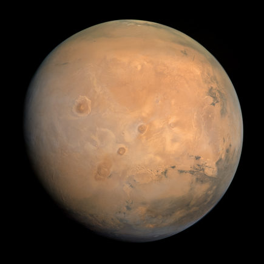
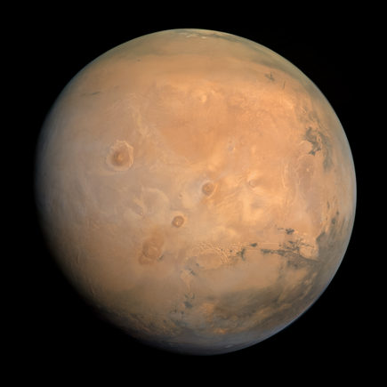

The solar system is a vast astronomical system that includes
the Sun and all celestial objects bound by its gravity. It was formed 4.6 billion years ago from a cloud of gas
and solar nebula. Gravity caused
the material to collapse, forming the Sun at the center with planets and other objects forming from the
remaining material. It consists of eight planets orbiting the Sun, including rocky terrestrial planets
like Earth and Mars and gas giants like Jupiter and Saturn. Between Mars and Jupiter lies the asteroid belt,
a region filled with rocky debris and minor planets. Beyond Neptune's orbit is the Kuiper Belt, a vast area
of icy bodies and dwarf planets like Pluto. The Solar System consists of:
|
|
|
 |
|
|
|
|
Click on each planet to know more about it!!